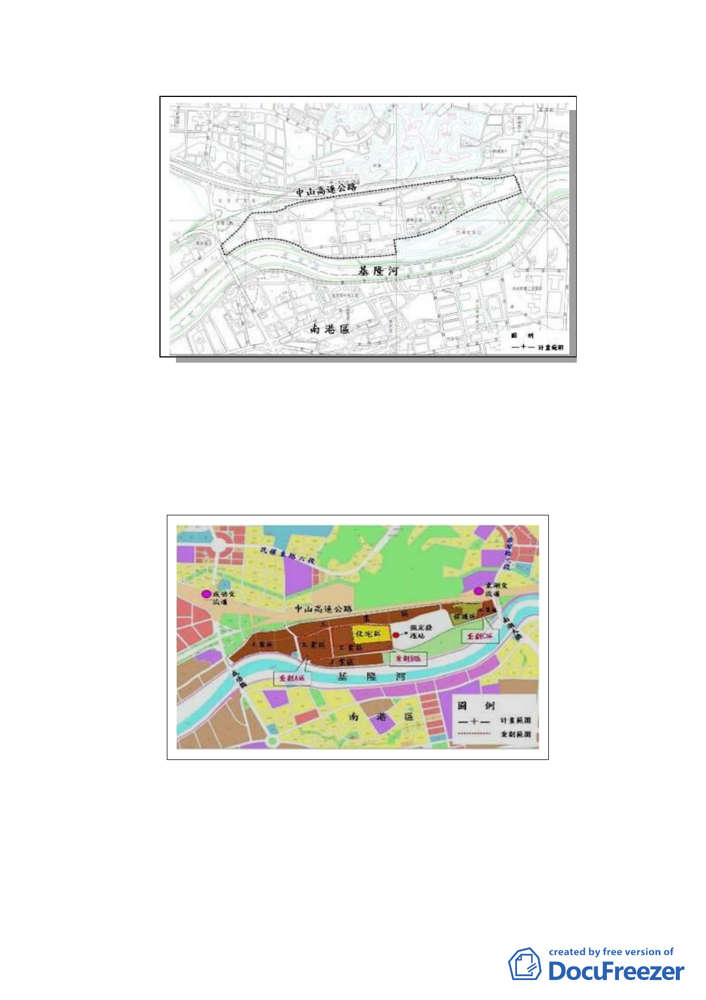

康
寧
路
三
成段
功
路
二
段
圖:計畫範圍
圖
（三） 另考量地區之地形坡度及許多住家工廠分布現況，規劃部分
土地為保護區及住宅區，其餘土地及未辦理市地重劃地區則
維持工業區，並於細部計畫中規劃朝「內湖科技園區」發展
模式，放寬使用組別，提供產業彈性進駐之機制，其土地使
用發展構想如下圖。
（四） 變更內容：
1. 重劃 A 區及 B 區：原計畫為工業區，變更為道路用地，面積
為 10,236 平方公尺。變更理由為配合市地重劃開發，新闢
15 米計畫道路，促進地區交通運輸功能。解決目前街廓過
大，部分裡地未臨道路無法指定建築線開發之窘境。
-6-